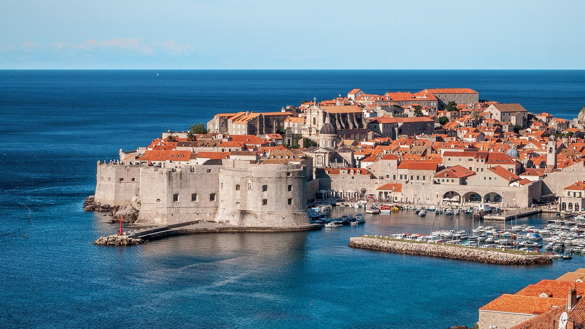
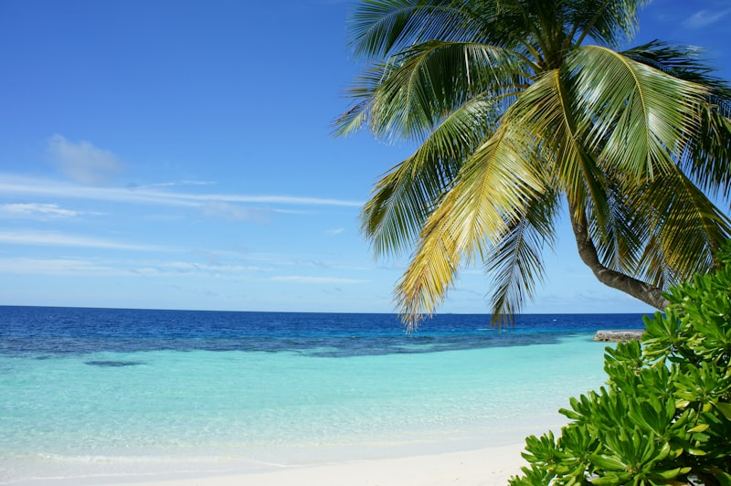
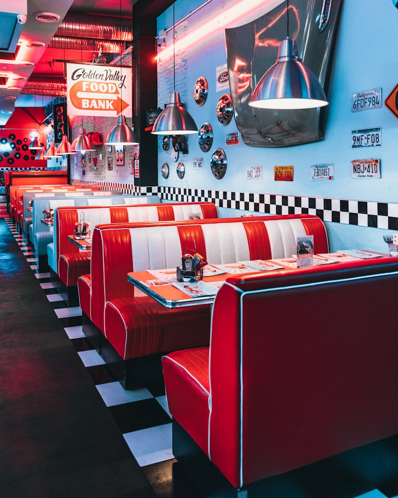
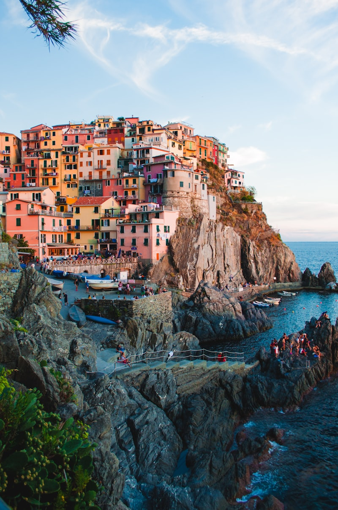
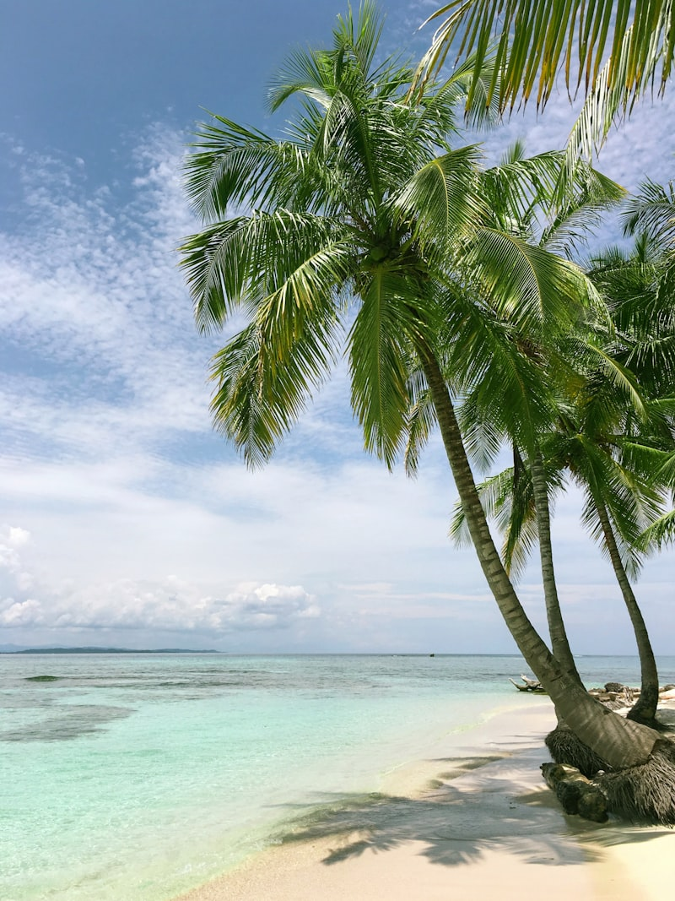

由北向南 · 亚得里亚海自驾之旅
8天7晚，从内陆到海岸，一路向南
克罗地亚申根签证 · 材料清单与办理流程
• 出发前至少提前3周递签，建议提前4-6周开始准备
• 所有非英文材料需附英文翻译件，可以自己翻译并签名
• 银行流水不要在递签前突然大额存入，保持自然
• 行程单中的酒店、机票信息需与提供的预订单完全一致
• 如之前有申根/美/加/英/澳签证，提供签证页复印件有助于提高通过率
• 领馆可能电话调查，保持手机畅通，回答与材料一致
精心规划的每一天，从容不赶路
上午乘国航CA913落地萨格勒布（约当地时间09:55），机场取车后直接上高速，直奔北部的布莱德湖（约240公里，行车2.5-3小时）。下午开始游湖：环湖漫步、乘Pletna传统木船登湖心岛敲许愿钟，上布莱德城堡俯瞰湖景，再品尝著名的布莱德奶油蛋糕。
上午留给布莱德的黄金时光：清晨湖畔散步，或前往4公里外的文特加峡谷（Vintgar Gorge）栈道徒步。下午稍晚驱车45分钟到卢布尔雅那，逛吃首都：Prešeren广场、三重桥、龙桥、中央市场，可上城堡山看全景。晚餐后驱车约1.5小时前往海滨度假小镇波尔托罗入住。

上午从波尔托罗驱车10分钟即到皮兰（Piran），这座威尼斯风格小城是斯洛文尼亚的海滨瑰宝：塔尔蒂尼广场、圣乔治教堂、老城墙一角，再来一顿海鲜午餐。下午过关南下，沿亚得里亚海一路行驶（约270公里，3-3.5小时），傍晚抵达扎达尔，正好赶上著名的海风琴日落。

上午补逛扎达尔老城精华，午后出发前往斯普利特。戴克里先宫是活着的罗马遗迹，宫殿地下厅、列柱廊和圣杜金教堂钟楼都是必去之处。
上午出海跳岛首选赫瓦尔岛，下午返回斯普利特后，傍晚沿D8沿海公路南下前往杜布罗夫尼克。今日行程较满，但一路海景绝美，抵达杜城后可夜游老城。
全天留给杜布罗夫尼克最精华的体验。清晨走一圈古城墙，俯瞰红屋顶和亚得里亚海。逛斯特拉顿大街、老港口，下午乘缆车登 Srđ 山看全景，傍晚看日落。

上午是杜布罗夫尼克最精华的时光。走一圈古城墙（如昨天没走），或补逛方济各修道院、大教堂。午后退房前往机场，乘21:00航班飞回萨格勒布，当晚入住休息。

中午12点萨格勒布机场起飞，结束8天亚得里亚海之旅。如果时间充裕，清晨可简单逛上城或中央市场。
出发前务必确认的关键事项
逐项勾选，确保万无一失